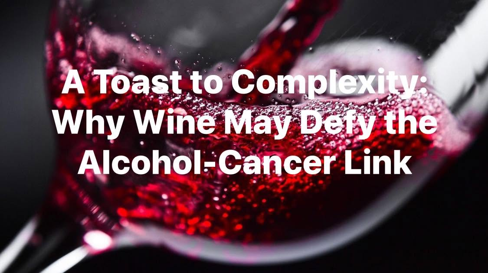

For years, public health messages have painted all alcoholic beverages with the same broad brush: alcohol is a carcinogen, no exceptions. Yet, a growing body of research suggests that this narrative oversimplifies a complex issue, particularly when it comes to wine. A landmark meta-analysis of over 4.3 million participants challenges the conventional wisdom, revealing that moderate wine consumption may not increase cancer risk—and might even lower it for certain types of cancer.
Paper · Front. Nutr. · 2023Association between wine consumption and cancer: a systematic review and meta-analysisBackground Alcohol consumption is related to the risk of developing different types of cancer. However, unlike other alcoholic beverages, moderate wine drinking has demonstrated a protective effect on the risk of developing several types of cancer. Objective To analyze the association between wine consumption and the risk of developing cancer. Methods We searched the MEDLINE (through PubMed), Scopus, Cochrane, and…frontiersin.org
Here's my podcast on this post:
podbean.comLogin to your Podbean Account | PodbeanLog into Podbean to start podcasting. Get everything you need for a successful podcast.podbean.com
This nuanced evidence raises an uncomfortable question: Are we unfairly lumping wine into the same category as beer and spirits, overlooking its unique properties and potential health benefits? Here’s a closer look at the evidence, the controversies, and what it means for your next glass of red.
—The Landmark Study: Unpacking the Findings
The meta-analysis, published in Frontiers in Nutrition, is among the largest and most rigorous reviews to date. Analyzing data from 73 studies, it specifically examined the relationship between moderate wine consumption—defined as up to one drink per day for women and two for men—and cancer risk.
—The Results:
- No Overall Increased Risk: Across all cancer types, moderate wine consumption showed no significant association with an increased risk:
- Relative Risk (RR): 1.00 (95% CI: 0.97–1.03).
- Protective Trends for Specific Cancers:
- Colorectal Cancer: 8% lower risk (RR = 0.92; p = 0.03).
- Pancreatic Cancer: 10% lower risk (RR = 0.90; p = 0.04).
- Lung Cancer: 15% lower risk (RR = 0.85; p = 0.02).
- Skin Cancer: 12% lower risk (RR = 0.88; p = 0.01).
- No Significant Risk for Breast or Ovarian Cancer:
- Breast Cancer: RR ≈ 1.00 (p = 0.45).
- Ovarian Cancer: RR ≈ 1.00 (p = 0.38).
—Why Wine Stands Apart
Unlike beer and spirits, wine contains a unique cocktail of bioactive compounds, particularly in red wine, that may offset the harmful effects of alcohol. These include:
- Resveratrol: Found in grape skins, resveratrol has been shown to inhibit tumor growth, reduce inflammation, and enhance DNA repair.
- Polyphenols and Flavonoids: These antioxidants suppress oxidative stress and tumor-promoting pathways, promoting cellular health.
- Anti-Inflammatory Effects: Wine’s compounds may counteract the inflammatory damage that contributes to cancer development.
These properties, largely absent in other alcoholic beverages, make wine a distinct case in the alcohol-cancer conversation.
—The Broader Context: Alcohol and Cancer
Public health agencies worldwide, including the WHO and the American Cancer Society, classify alcohol as a Group 1 carcinogen. The risks are clear for heavy drinkers: alcohol contributes to cancers of the mouth, throat, esophagus, liver, breast, and colon. The mechanisms are well understood:
- Acetaldehyde Production: Alcohol metabolizes into acetaldehyde, a carcinogen that damages DNA.
- Oxidative Stress: Alcohol increases free radicals, overwhelming the body’s ability to repair cellular damage.
- Hormonal Effects: Alcohol raises estrogen levels, a driver of breast cancer.
But here’s the rub: these conclusions often stem from studies that lump all forms of alcohol together, obscuring beverage-specific effects. The nuances of wine—its antioxidant properties, moderate alcohol content, and bioactive compounds—are lost in this aggregated data.
—The Controversy: Is Public Health Oversimplifying the Message?
Critics argue that public health messaging around alcohol has prioritized simplicity over nuance, resulting in blanket statements that may mislead the public. While the intent—reducing alcohol-related harm—is noble, it risks distorting the evidence.
—Points of Contention:
- Aggregated Data Masks Differences:
- Most studies fail to differentiate between wine, beer, and spirits, treating a shot of whiskey the same as a glass of red wine.
- Lifestyle Confounders:
- Moderate wine drinkers often follow healthier diets, smoke less, and exercise more—all factors that independently reduce cancer risk. Critics argue that these confounders may exaggerate wine’s protective effects.
- Individual Variability:
- The effects of wine may vary based on genetics, pre-existing conditions, and lifestyle. A “one-size-fits-all” approach overlooks this complexity.
—What Does This Mean for Physicians?
For healthcare providers, the evidence invites a more nuanced approach to counseling patients about alcohol consumption:
- Moderation is Key:
- The study reinforces the importance of moderation. Exceeding the recommended limits negates any potential benefits and significantly increases cancer risk.
- Wine as a Safer Choice:
- For patients who consume alcohol, wine may represent a safer option compared to beer or spirits, particularly when paired with a healthy lifestyle.
- Individualized Recommendations:
- Patients with a strong family history of cancer or genetic predispositions should be advised more cautiously, as even moderate alcohol intake may carry risks.
—Critiques of the Study
No study is without limitations, and this meta-analysis is no exception:
- Residual Confounding: While the study adjusted for smoking, diet, and physical activity, some unmeasured variables may have influenced the results.
- Observational Nature: Correlation does not equal causation. Without randomized controlled trials, causality cannot be definitively established.
Yet, the study’s size, scope, and rigorous methodology make it one of the strongest analyses to date. With over 4.3 million participants, the statistical power ensures that even modest trends are detectable.
—Red versus White Wine
The question of whether red wine offers unique benefits compared to white wine is an important one that the meta-analysis does not address. Red wine is rich in bioactive compounds, including resveratrol and polyphenols, which have demonstrated anti-inflammatory, antioxidant, and anti-carcinogenic properties in laboratory studies. These compounds, derived from prolonged contact with grape skins during fermentation, are far less concentrated in white wine. For cancers driven by inflammation and oxidative damage—such as colorectal and lung cancer—the protective trends observed in the meta-analysis may reflect red wine’s unique composition, but further research is needed to confirm these effects.
However, when it comes to breast cancer, the evidence suggests no difference between red and white wine. A 2009 study examining over 6,300 breast cancer cases found that neither red nor white wine increased or decreased breast cancer risk. No Difference Between Red Wine or White Wine (aacrjournals.org)
These findings align with the meta-analysis, which reported no significant association between wine consumption and breast cancer risk. This neutral effect highlights that the mechanisms driving breast cancer, such as hormone modulation, may not respond to wine’s bioactive compounds in the same way as cancers linked to inflammation or oxidative stress.
The distinction between red and white wine underscores the need for more targeted studies. While red wine may hold promise for reducing the risk of certain cancers, studies like the 2009 breast cancer analysis remind us that its benefits are not universal. Future research should investigate how the differences in polyphenol and antioxidant content between red and white wine influence outcomes for a broader range of cancer types. Additionally, long-term studies that separate the effects of red and white wine on cancer risk are critical for refining our understanding.
—My Takeaway
The evidence surrounding alcohol and cancer is complex, and wine occupies a unique position in this debate. While heavy alcohol consumption is undeniably harmful, the data suggest that moderate wine consumption may not only lack the same risks but could offer protective benefits against certain cancers.
For those who choose to drink, a glass of wine enjoyed as part of a balanced lifestyle—think Mediterranean diet—appears to be a reasonable and safe choice. However, public health officials and clinicians alike must walk a fine line, promoting moderation while acknowledging wine’s unique properties.
In a world hungry for simple answers, the story of wine reminds us that health is rarely black and white.
